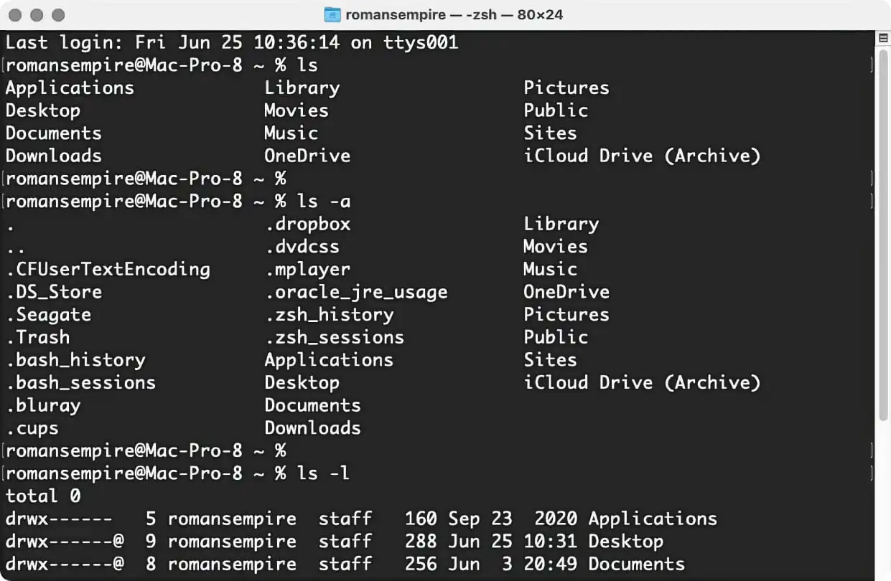
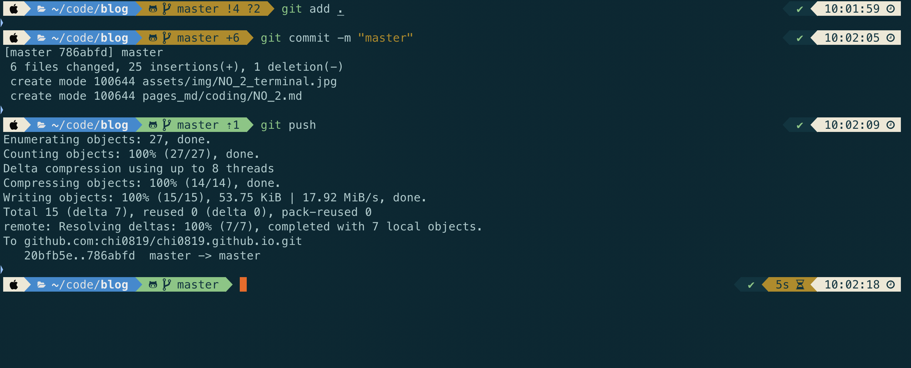

iTerm2設定教學
原生的MacOS系統的終端機是黑白的顏色

原生的字體是黑底白字，在找自己剛剛打了什麼東西的時候總是非常困難，但是iTerm2有許多客製化的介面，可以讓你的終端機看起來很潮，多種顏色讓你的人生 終端機不再黑白
安裝iTerm2搭配oh my zsh之後的終端機樣式

iTerm2安裝
透過Homebrew安裝
Homebrew是一種Mac的免費開源套件管理工具
在terminal輸入以下指令可以安裝Homebrew
$ /bin/bash -c "$(curl -fsSL https://raw.githubusercontent.com/Homebrew/install/HEAD/install.sh)"
安裝的時候可能出現以下警告訊息
Warning: /opt/homebrew/bin is not in your PATH.
只需要修改路徑，輸入指令即可解決
$ export PATH=/opt/homebrew/bin:$PATH
安裝git
git 是一種版本控制系統，可以協助你儲存網路上複製下來的資源
$ brew install git
開始安裝iTerm2
輸入以下指令安裝
$ brew cask install iterm2
安裝完成後可以在 iTerm2-color-schemes安裝整包的iTerm2背景顏色
裡面有所有的iTerm2的背景顏色，副檔名是.itermcolors
接下來在找到你的iTerm2應用程式
打開iTerm2
前往 preference -> profile -> colors -> color presets -> import
在import選取自己喜歡的背景顏色
以下的指令都是在iTerm2中執行
下載oh-my-zsh
輸入指令下載
$ sh -c "$(curl -fsSL https://raw.githubusercontent.com/ohmyzsh/ohmyzsh/master/tools/install.sh)"
下載powerlevel10k
輸入指令下載
$ git clone https://github.com/romkatv/powerlevel10k.git $ZSH_CUSTOM/themes/powerlevel10k
進入.zshrc修改設定
$ vim ~/.zshrc
將ZSH_THEME更改為
ZSH_THEME="powerlevel10k/powerlevel10k"
離開檔案後啟用設定
$ source ~/.zshrc
接下來會詢問你是否安裝Meslo Nerd Font，按下y就可以了
如果之後發現終端機中的一些圖案和文字發生錯誤，可能是字體發生問題
安裝字體
需要另外安裝power level10k的適用字體
在下方會有四個MesloLGS NF的.ttf檔全部都要下載，並將其加入本機的字體當中
接著前往iTerm2的設定當中更改字體
前往 preference -> profile -> text -> font
將字體更換為MesloLGS NF
接下來輸入
$ p10k configure
便可以選取自己喜歡的prompt
這樣就大功告成啦！